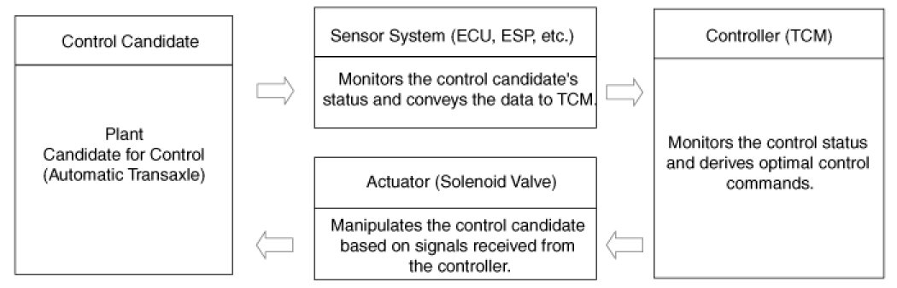

Automatic Transaxle Control System
Description
Automatic transaxle system relies on various measurement data to determine the current control status and extrapolate the necessary compensation values. These values are used to control the actuators and achieve the desired control output. If a problem with the drivetrain, including the transaxle, has been identified, perform self-diagnosis and basic transaxle inspection (oil and fluid inspection) and then check the control system's components using the diagnosis tool.
Control System Composition

Fault Diagnosis
Features a fail-safe mechanism that provides "limp-home" 4th gear hold to enable the vehicle to be driven to the owner's home or dealer shop.
Fail-Safe: The TCM provides 4th gear hold and Reverse gear in the event of a malfunction.
Limp Home: Maintains minimal functionality (Drive(4th gear hold), Reverse) in the event of a malfunction, making it possible for the vehicle to reach the dealer shop.
Self-diagnosis
TCM is in constant communication with the control system's components (sensors and solenoids). If an abnormal signal is received for longer than the predefined duration, TCM recognizes a fault, stores the fault code in memory, and then sends out a fault signal through the self-diagnosis terminal. Such fault codes are independently backed up and will not be cleared even if the ignition switch is turned off, the battery is disconnected, or the TCM connector is disconnected.
CAUTION:
Disconnecting a sensor or an actuator connector while the ignition switch is in the "On" position generates a diagnostic trouble code (DTC) and commits the code to memory. In such event, disconnecting the battery will not clear the fault diagnosis memory. The diagnosis tool must be used to clear the fault diagnosis memory.
CAUTION:
- Before removing or installing any part, read the diagnostic trouble codes and then disconnect the battery negative (-) terminal.
- Before disconnecting the cable from battery terminal, turn the ignition switch to OFF. Removal or connection of the battery cable during engine operation or while the ignition switch is ON could cause damage to the TCM.
- When checking the generator for the charging state, do not disconnect the battery '+' terminal to prevent the ECM from damage due to the voltage.
- When charging the battery with the external charger, disconnect the vehicle side battery terminals to prevent damage to the TCM.
Checking Procedure (Self-diagnosis)
CAUTION:
- When battery voltage is excessively low, Diagnostic Trouble Codes(DTC) can not be read. Be sure to check the battery for voltage and the charging system before starting the test.
Inspection Procedure (Using the GDS)
1. Turn OFF the ignition switch.
2. Connect the GDS to the data link connector on the lower crash pad.
3. Turn ON the ignition switch.
4. Use the GDS to check the diagnostic trouble code.
5. Repair the faulty part from the diagnosis chart.
6. Erase the diagnostic trouble code.
7. Disconnect the GDS.
CAUTION:
- After replacing the automatic transaxle, use the GDS to reset (erase the TCM learning values). Then perform Transaxle Control Module (TCM) learning to provide optimum shift quality.
- Adding automatic transaxle fluid.
- After servicing the automatic transaxle or TCM, clear the Diagnostic Trouble Code (DTC) using the GDS tool. Diagnostic Trouble Codes (DTC) cannot be cleared by disconnecting the battery.